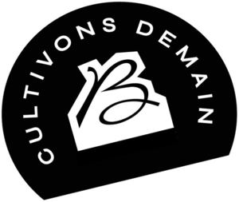

Trade Mark Journal No.2025/016 18 April 2025
WO0000001837870 (32,33,35,40,41,42,44)
Office of origin: France
Date of International Registration:10 September 2024
Date of designation in the UK:
10 September 2024

International priority date claimed: 1 August 2024
(France)
(5074091)
- Class 32
- Non-alcoholic wines.
- Class 33
- Wines complying with the specifications of any PDO from the Bordeaux region.
- Class 35
- Advertising and communication services for the commercial promotion of the protected designation of origin "Bordeaux" and all protected designations of origin pertaining to a Bordeaux vineyard, of wines and vineyard products; organization of exhibitions, trade shows, fairs and all types of events for commercial or advertising purposes; organization of workshops, particularly wine tasting, and competitions for promotional purposes with or without the distribution of prizes or allocation of rewards, particularly in the context of trade shows, colloquiums, conferences, congresses, exhibitions, fairs; administration of exhibition sites; organization of business meetings in the context of trade shows, colloquiums, conferences, congresses, exhibitions, fairs, namely, putting in touch exhibitors and visitors for the purpose of holding business meetings; distribution of advertising material (leaflets, prospectuses, printed matter, samples); sales promotion for third parties; good and service presentation and demonstration services for promotional purposes; retail and wholesale services connected with the sale of wine and vineyard products, namely wine-based beverages; distribution for advertising purposes of flyers, brochures, posters, poster bills, stickers, printed matter, drip-stop collars, stoppers and pouring spouts, wine pourer disks, corkscrews, glasses, wine spittoons, bottle sleeves, sidewalk signs, advertising easels, ice buckets, jumpers, t-shirts, pins, bags, tote bags; statistical, business, commercial information in the field of exhibitions and particularly relating to the organization of exhibitions; advertising by mail order, radio, television; online advertising on a computer network; advertising mail; rental of advertising time on all communication media; rental of advertising space; dissemination of advertisements, including via the Internet; organization of promotional activities for developing customer loyalty; organization of regional and national promotional campaigns; newspaper subscription services for third parties; arranging subscriptions for others on all kinds of information media, texts, sound and/or images and especially in the form of electronic and digital publications; management and updating of computer files and databases; information and data collection, systematization and search (for third parties) in computer files or databases; commercial information and advice for consumers on the processes of development, production and marketing of wine and vineyard products; Advice, assistance and support to wine growers in the conduct of their business; advice and information to companies with respect to assessment of regulatory conformity, standards, reference documents and specifications for wines and wine products; company auditing services (commercial analyses); commercial business administration, organization and management; office functions.
- Class 40
- Wine-making and wine-production services on behalf of third parties, advice in the field of wine making and wine production.
- Class 41
- Education, training and entertainment services; services for the organization and conducting of exhibitions, fairs, trade shows and all events for cultural or educational purposes; organization and conducting of colloquiums, conferences, congresses, seminars, symposiums; organizing and conducting internships, workshops, courses or training sessions, entertainment programs, webinars and competitions in the field of wine; oenology courses, arranging and conducting workshops, particularly wine tasting for educational and entertainment purposes; services for the organization of competitions with respect to education, entertainment, with or without awarding prizes or presenting awards, in the context of trade shows, colloquiums, conferences, congresses, exhibitions, fairs; organization and planning of receptions (entertainment); club services (education or training); publishing of printed matter, newspapers, magazines, journals, periodicals, books, index cards, manuals, albums, catalogs and pamphlets, posters, on all media including electronic media; publication of texts other than advertising texts on all media; publication of printed matter on wine; provision of non-downloadable electronic publications online; information on leisure activities; sporting and cultural activities; production of films, short features, documentaries, radio or television current affairs programs; editing of radio or television programs; organization and production of shows; organizing and conducting eco-friendly colloquiums, conferences, congresses, seminars adopting a sustainable approach; publication of documents in the field of ecofriendliness and sustainable development.
- Class 42
- Technical advice concerning the production of wines; services for checking and verifying the compliance of wine and vineyard products with regulations, standards, specifications and benchmarks; quality control and verification services with a view to certification of responsible and sustainable environmental practices in the field of vineyards; environmental testing and inspection services (quality auditing) in the field of vineyards; advice and information with respect to environmental protection, sustainable development and biodiversity.
- Class 44
- Viticulture services; advice and information in the field of wine growing; cultivation of grapes for wine production.
CONSEIL INTERPROFESSIONNEL DU VIN DE BORDEAUX
Representative: Kilburn & Strode LLP, Lacon London, 84 Theobalds Road, Holborn London WC1X 8NL UNITED KINGDOM